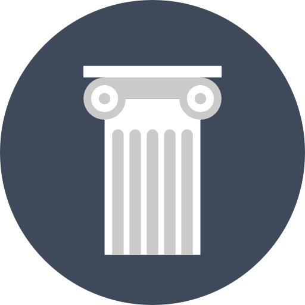
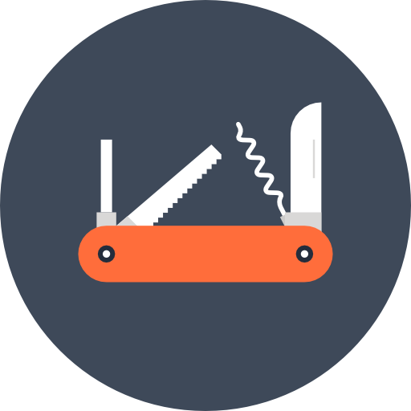

ABOUT ME
I study Cognitive Science, specializing in Human-Computer Interaction. I'm an aspiring UX Designer and Wedding Photographer. The best thing about UX design is that it is just a big project. Coming from a project-based school, I learned how to collaborate with my peers (I've always been a shy kid) and work toward a certain goal by doing parts at a time. It really feels great when parts of the puzzle start to come together toward a final product, and how creativity and meaning play a large role in the making of it. I hope to create and improve already made designs, for the benefit of communities, to feel the same sense of enjoyment when interacting with something I enjoyed working on.

EDUCATION
University of California, San Diego
Major: Cognitive Science specializing in Human-Computer Interaction
Graduation: Spring 2017
University of California, San Diego
Major: Cognitive Science specializing in Human-Computer Interaction
Graduation: Spring 2017
SKILLS
Languages: HTML, CSS, JS, Java, MATLAB
UX/UI: User centered design, iterative prototyping, low-high fidelity mockups, user testing, cognitive ethnography, photography, video
Tools: Adobe Photoshop, Adobe Lightroom, Adobe Premiere Pro, Bootstrap, InVision, Github, Balsamiq
Languages: HTML, CSS, JS, Java, MATLAB
UX/UI: User centered design, iterative prototyping, low-high fidelity mockups, user testing, cognitive ethnography, photography, video
Tools: Adobe Photoshop, Adobe Lightroom, Adobe Premiere Pro, Bootstrap, InVision, Github, Balsamiq

HOBBIES
Photography, videography, fashion, sneakers, denim, leathercrafting, cars, movies (BTTF/F&F), video games, dogs, lifting, beer, mechanical keyboards, food.
Photography, videography, fashion, sneakers, denim, leathercrafting, cars, movies (BTTF/F&F), video games, dogs, lifting, beer, mechanical keyboards, food.